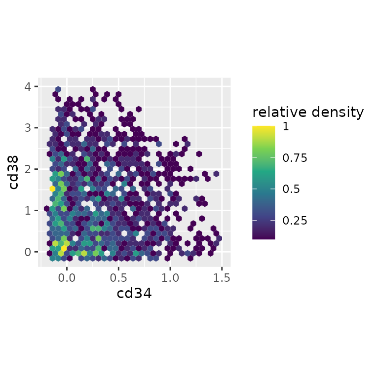

Often, high-dimensional cytometry experiments collect tens or hundreds or millions of cells in total, and it can be useful to downsample to a smaller, more computationally tractable number of cells - either for a final analysis or while developing code.
To do this, tidytof implements the
tof_downsample() verb, which allows downsampling using 3
methods: downsampling to an integer number of cells, downsampling to a
fixed proportion of the total number of input cells, or downsampling to
a fixed cellular density in phenotypic space.
Downsampling with tof_downsample()
Using tidytof’s built-in dataset
phenograph_data, we can see that the original size of the
dataset is 1000 cells per cluster, or 3000 cells in total:
data(phenograph_data)
phenograph_data |>
dplyr::count(phenograph_cluster)
#> # A tibble: 3 × 2
#> phenograph_cluster n
#> <chr> <int>
#> 1 cluster1 1000
#> 2 cluster2 1000
#> 3 cluster3 1000To randomly sample 200 cells per cluster, we can use
tof_downsample() using the “constant”
method:
phenograph_data |>
# downsample
tof_downsample(
group_cols = phenograph_cluster,
method = "constant",
num_cells = 200
) |>
# count the number of downsampled cells in each cluster
count(phenograph_cluster)
#> # A tibble: 3 × 2
#> phenograph_cluster n
#> <chr> <int>
#> 1 cluster1 200
#> 2 cluster2 200
#> 3 cluster3 200Alternatively, if we wanted to sample 50% of the cells in each
cluster, we could use the “prop” method:
phenograph_data |>
# downsample
tof_downsample(
group_cols = phenograph_cluster,
method = "prop",
prop_cells = 0.5
) |>
# count the number of downsampled cells in each cluster
count(phenograph_cluster)
#> # A tibble: 3 × 2
#> phenograph_cluster n
#> <chr> <int>
#> 1 cluster1 500
#> 2 cluster2 500
#> 3 cluster3 500And finally, we might also be interested in taking a slightly
different approach to downsampling that reduces the number of cells not
to a fixed constant or proportion, but to a fixed density in
phenotypic space. For example, the following scatterplot demonstrates
that there are certain areas of phenotypic density in
phenograph_data that contain more cells than others along
the cd34/cd38 axes:
rescale_max <-
function(x, to = c(0, 1), from = range(x, na.rm = TRUE)) {
x / from[2] * to[2]
}
phenograph_data |>
# preprocess all numeric columns in the dataset
tof_preprocess(undo_noise = FALSE) |>
# plot
ggplot(aes(x = cd34, y = cd38)) +
geom_hex() +
coord_fixed(ratio = 0.4) +
scale_x_continuous(limits = c(NA, 1.5)) +
scale_y_continuous(limits = c(NA, 4)) +
scale_fill_viridis_c(
labels = function(x) round(rescale_max(x), 2)
) +
labs(
fill = "relative density"
)
To reduce the number of cells in our dataset until the local density
around each cell in our dataset is relatively constant, we can use the
“density” method of tof_downsample:
phenograph_data |>
tof_preprocess(undo_noise = FALSE) |>
tof_downsample(method = "density", density_cols = c(cd34, cd38)) |>
# plot
ggplot(aes(x = cd34, y = cd38)) +
geom_hex() +
coord_fixed(ratio = 0.4) +
scale_x_continuous(limits = c(NA, 1.5)) +
scale_y_continuous(limits = c(NA, 4)) +
scale_fill_viridis_c(
labels = function(x) round(rescale_max(x), 2)
) +
labs(
fill = "relative density"
)
Thus, we can see that the density after downsampling is more uniform
(though not exactly uniform) across the range of
cd34/cd38 values in
phenograph_data.
Additional documentation
For more details, check out the documentation for the 3 underlying
members of the tof_downsample_* function family (which are
wrapped by tof_downsample):
tof_downsample_constanttof_downsample_proptof_downsample_density
Session info
sessionInfo()
#> R version 4.4.1 (2024-06-14)
#> Platform: x86_64-pc-linux-gnu
#> Running under: Ubuntu 22.04.4 LTS
#>
#> Matrix products: default
#> BLAS: /usr/lib/x86_64-linux-gnu/openblas-pthread/libblas.so.3
#> LAPACK: /usr/lib/x86_64-linux-gnu/openblas-pthread/libopenblasp-r0.3.20.so; LAPACK version 3.10.0
#>
#> locale:
#> [1] LC_CTYPE=C.UTF-8 LC_NUMERIC=C LC_TIME=C.UTF-8
#> [4] LC_COLLATE=C.UTF-8 LC_MONETARY=C.UTF-8 LC_MESSAGES=C.UTF-8
#> [7] LC_PAPER=C.UTF-8 LC_NAME=C LC_ADDRESS=C
#> [10] LC_TELEPHONE=C LC_MEASUREMENT=C.UTF-8 LC_IDENTIFICATION=C
#>
#> time zone: UTC
#> tzcode source: system (glibc)
#>
#> attached base packages:
#> [1] stats graphics grDevices utils datasets methods base
#>
#> other attached packages:
#> [1] ggplot2_3.5.1 dplyr_1.1.4 tidytof_0.99.8
#>
#> loaded via a namespace (and not attached):
#> [1] gridExtra_2.3 rlang_1.1.4 magrittr_2.0.3
#> [4] matrixStats_1.3.0 compiler_4.4.1 systemfonts_1.1.0
#> [7] vctrs_0.6.5 stringr_1.5.1 pkgconfig_2.0.3
#> [10] shape_1.4.6.1 fastmap_1.2.0 ggraph_2.2.1
#> [13] utf8_1.2.4 rmarkdown_2.28 prodlim_2024.06.25
#> [16] tzdb_0.4.0 ragg_1.3.2 purrr_1.0.2
#> [19] xfun_0.47 glmnet_4.1-8 cachem_1.1.0
#> [22] jsonlite_1.8.8 recipes_1.1.0 highr_0.11
#> [25] tweenr_2.0.3 parallel_4.4.1 R6_2.5.1
#> [28] bslib_0.8.0 stringi_1.8.4 parallelly_1.38.0
#> [31] rpart_4.1.23 lubridate_1.9.3 jquerylib_0.1.4
#> [34] Rcpp_1.0.13 iterators_1.0.14 knitr_1.48
#> [37] future.apply_1.11.2 readr_2.1.5 flowCore_2.16.0
#> [40] Matrix_1.7-0 splines_4.4.1 nnet_7.3-19
#> [43] igraph_2.0.3 timechange_0.3.0 tidyselect_1.2.1
#> [46] yaml_2.3.10 viridis_0.6.5 timeDate_4032.109
#> [49] doParallel_1.0.17 codetools_0.2-20 listenv_0.9.1
#> [52] lattice_0.22-6 tibble_3.2.1 Biobase_2.64.0
#> [55] withr_3.0.1 evaluate_0.24.0 future_1.34.0
#> [58] desc_1.4.3 survival_3.6-4 polyclip_1.10-7
#> [61] pillar_1.9.0 foreach_1.5.2 stats4_4.4.1
#> [64] generics_0.1.3 RcppHNSW_0.6.0 S4Vectors_0.42.1
#> [67] hms_1.1.3 munsell_0.5.1 scales_1.3.0
#> [70] globals_0.16.3 class_7.3-22 glue_1.7.0
#> [73] tools_4.4.1 data.table_1.15.4 gower_1.0.1
#> [76] fs_1.6.4 graphlayouts_1.1.1 tidygraph_1.3.1
#> [79] grid_4.4.1 yardstick_1.3.1 tidyr_1.3.1
#> [82] RProtoBufLib_2.16.0 ipred_0.9-15 colorspace_2.1-1
#> [85] ggforce_0.4.2 cli_3.6.3 textshaping_0.4.0
#> [88] fansi_1.0.6 cytolib_2.16.0 viridisLite_0.4.2
#> [91] lava_1.8.0 gtable_0.3.5 sass_0.4.9
#> [94] digest_0.6.37 BiocGenerics_0.50.0 ggrepel_0.9.5
#> [97] htmlwidgets_1.6.4 farver_2.1.2 memoise_2.0.1
#> [100] htmltools_0.5.8.1 pkgdown_2.1.0 lifecycle_1.0.4
#> [103] hardhat_1.4.0 MASS_7.3-60.2